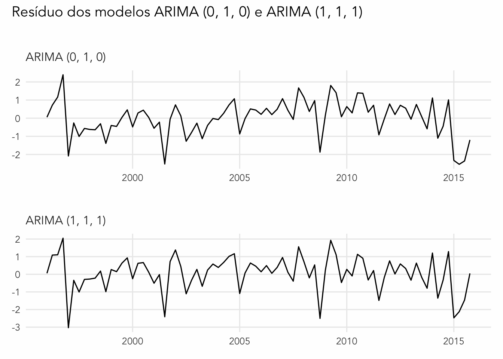

library(forecast)
library(urca)
library(qs)O modelo
A teoria dos modelos ARMA(p,q) serve apenas para séries estiacionárias; na prática, contudo, é bastante frequente encontrar séries não-estacionárias. Séries com tendência de crescimento ou cuja variância aumenta ao longo do tempo são exemplos típicos de não-estacionaridade que encontra-se nos dados.
A ideia da modelagem ARIMA é de tirar diferenças na série original de forma a torná-la estacionária. Isto é, se tivermos uma série \(y_{t}\) que não é estacionária, vamos transformá-la em \(x_{t} \equiv y_{t} - y_{t-1}\) para torná-la estacionária.
Neste caso, a série \(x_{t}\) é chamada a primeira diferença de \(y_{t}\). Eventualmente será necessário tirar mais do que uma diferença para tornar a série estacionária.
Contexto
A análise de séries temporais ocupa um lugar central na macroeconomia moderna, fornecendo ferramentas essenciais para compreender a dinâmica das principais variáveis econômicas. Os modelos ARIMA (AutoRegressive Integrated Moving Average) representam uma das abordagens mais consolidadas e amplamente utilizadas para modelagem de séries temporais univariadas.
O ARIMA combina simplicidade e boa capacidade preditiva. Neste sentido, ele serve tanto como uma ferramenta central, dentro de uma análise macroeconômica, como também como benchmark para modelos mais sofisticados.
R
A modelagem de séries temporais no R é um tanto caótica. Isto acontece pela diversidade e complexidade de dados em séries de tempo. Via de regra, as funções-base do R servem muito bem para séries mensais, trimestrais e anuais. Quando se lida, por exemplo, com dados financeiros diários ou intra-diários costuma ser necessário usar pacotes especializados.
Com o tempo, as funções base do R se tornaram um tanto defasadas. Os gráficos do R foram revolucionados pelo pacote ggplot2 mas a sua sintaxe não funciona tão diretamente com séries de tempo; como resultado, alguns ajustes são necessários para compatibilizar os dois.
Neste post, tentei manter o código o mais simples possível usando somente o pacote forecast1, que é excelente para o tratamento de séries de tempo univariadas2. Abaixo segue a lista dos pacotes necessários para acompanhar este post3.
Metodologia
Este post tem como objetivo principal demonstrar a aplicação prática dos modelos ARIMA em séries macroeconômicas brasileiras, explorando tanto a metodologia tradicional de Box-Jenkins quanto abordagens automatizadas mais recentes.
Box-Jenkins
A metodologia Box-Jenkins parte do princípio da parcimônia. Esta abordagem iterativa é composta por três etapas fundamentais: identificação, estimação e verificação.
A identificação da ordem do modelo é feita visualmente usando gráficos de autocorrelação e autocorrelação parcial.
Vários modelos concorrentes são estimados e escolhe-se o mais apropriado usando uma mistura de parcimônia, critérios de informação e testes estatísticos. Resumidamente,
- Usando um teste de raiz unitária, identifica se a série é não-estacionária. Se a série for estacionária pode-se usar um modelo ARMA(p, q).
- Se a série for não-estacionária, tira a primeira diferença da série e repete o processo até que a série se torne estacionária.
- Avalia-se a FAC e FACP para propor um modelo de “ordem máxima”.
- Estima-se vários modelos ARIMA(p,q) de ordens menores.
- Seleciona-se o melhor modelo segundo algum critério. A abordagem mais simples é escolher algum critério de informação como o BIC.
Aplicaremos esta metodologia completa à série de consumo das famílias brasileiras.
Macroeconomia: consumo no Brasil
Para acompanhar estes exemplos vamos usar as séries das contas nacionais brasileiras. Estas séries são trimestrais e dessazonalizadas. Além disso, os seus valores são indexados, em base-100, em 1995, o primeiro ano da série completa. O código abaixo importa os dados
macro <- qs::qread("...")| data | pib | consumo | governo | fbkf | export | import |
|---|---|---|---|---|---|---|
| 1996-03-31 | 100.84 | 98.63 | 99.14 | 96.84 | 98.21 | 91.34 |
| 1996-07-01 | 100.36 | 100.88 | 100.74 | 98.94 | 95.94 | 99.91 |
| 1996-10-01 | 104.40 | 103.93 | 104.24 | 102.12 | 95.63 | 107.19 |
| 1996-12-31 | 103.28 | 109.17 | 88.58 | 106.81 | 100.45 | 118.61 |
| 1997-03-31 | 104.07 | 106.42 | 100.31 | 108.11 | 105.16 | 118.78 |
| 1997-07-01 | 105.10 | 106.92 | 99.91 | 109.03 | 111.29 | 123.62 |
Inicialmente, vamos usar somente a série de consumo.
# Série de consumo
cons <- ts(macro$consumo, start = c(1996, 1), frequency = 4)1. Estacionaridade
Grosso modo, uma série estacionária possui propriedades estatísticas que não variam no tempo. Isto garante que métricas usuais como média e variância continuem fazendo sentido.
Propriedades de séries estacionárias.
- Média constante.
- Variância finita e constante.
- Autocovariância que depende somente do tamanho do intervalo de tempo considerado.
Costuma ser fácil enxergar se uma série é estacionária ou não-estacionária. Visualmente, uma série não-estacionária cresce ou diminui ao longo do tempo; em alguns casos, ela possui períodos de oscilação (i.e. variância) mais/menos intensa.

Além disso, é muito mais comum encontrar séries que são não-estacionárias do que o contrário. Séries estacionárias oscilam de maneira regular em torno de uma média constante e são visualmente similares a um ruído branco. Já a maioria das séries de tempo que se encontra na prática são ou uma linha que sobe ou uma linha que desce.
Análise visual:
- Série aumenta ou diminui muito ao longo do tempo (i.e. parece ter uma tendência).
- Volatailidade da série cresce ou diminui ao longo do tempo.
O gráfico abaixo, feito com a função autoplot, mostra a série de consumo dessazonalizada. Como se vê, ela apresenta claros indícios de ser não-estacionária, pois a média dela não é constante no tempo.
# echo: false
autoplot(cons) +
ggtitle("Consumo das famílias (dessazonalizado)") +
xlab(NULL) +
ylab("Index (100 = 1995)") +
theme_tsAutocorrelação
Pode-se verificar o gráfico de autocorrelação e autocorrelação parcial da série como um critério informal para avaliar a estacionaridade4. Em geral, se a FAC demora muito para decair, a série é não-estacionária. O gráfico abaixo mostra a FAC e FACP de cinco “ciclos” da série.
ggAcf(cons, lag.max = frequency(cons) * 5)
ggPacf(cons, lag.max = frequency(cons) * 5)Teste de raiz unitária
Testes de raiz unitária podem ser bastante complexos. Tipicamente, aplica-se um teste ADF (Augmented Dickey-Fuller) mais geral (com constante e tendência) e vai-se afunilando até o ADF mais simples (sem constante e sem tendência). Enders (1995) apresenta uma boa exposição do assunto e oferece um fluxograma de como melhor aplicar os testes.
O grande problema do teste ADF é que ele tem baixo poder e queremos não-rejeitar (aceitar) a hipótese nula. O fluxograma de Enders visa minimizar o risco de se aceitar a hipótese de raiz unitária devido ao baixo poder do teste ADF. Alternativamente, pode-se usar o teste Philips-Perron (ur.pp).
Abaixo mostro como fazer o teste ADF, nas suas três versões, usando o critério BIC para seleção automática do número de defasagens. Neste caso, fica claro que a série possui uma ruiz unitária sem constante e sem tendência. A rigor, seria necessário aplicar os mesmos testes sobre a primeira diferença da série para verificar se há somente uma raiz unitária.
Os resultados podem ser melhor detalhados usando summary , i.e., summary(adf1).
ur.df(cons, type = "trend", lags = 12, selectlags = "BIC")adf1 = ur.df(cons, type = "trend", lags = 12, selectlags = "BIC")
adf2 = ur.df(cons, type = "drift", lags = 12, selectlags = "BIC")
adf3 = ur.df(cons, type = "none", lags = 12, selectlags = "BIC")2. Identificação
A etapa de identificação constitui o ponto de partida da metodologia Box-Jenkins, onde determinamos a estrutura mais apropriada do modelo ARIMA(p,d,q) através de análise gráfica.
Train e test
Uma prática comum em séries de tempo é remover um percentual das observações finais afim de testar a capacidade preditiva do modelo5. Esta abordagem também é bastente comum na literatura de Machine Learning, onde o objetivo costuma ser gerar previsões.
O código abaixo cria uma série train com cerca de 85% das observações. Vale notar que há maneiras mais sofisticadas de fazer esta divisão e veremos como fazer uma delas mais adiante.
a = 0.15
h = floor(a * length(cons))
train = head(cons, length(cons) - h)
test = tail(cons, h)
Autocorrelação
O gráfico abaixo mostra a FAC e FACP da primeira diferença. Agora, temos somente a primeira defasagem significativa em cada um dos gráficos. Assim, podemos supor que o modelo de ordem máximo é um ARIMA (1, 1, 1).
dcons <- diff(train)
ggAcf(train)
ggPacf(train)3. Estimação
Vamos estimar quatro modelos: ARIMA(1, 1, 1), ARIMA (1, 1, 0), ARIMA (0, 1, 1) e ARIMA (0, 1, 0). A interpretação dos coeficientes requer cuidado especial:
Coeficiente AR(1): mede a persistência da série; valores próximos a 1 indicam alta persistência.
Coeficiente MA(1): captura o efeito de choques aleatórios passados sobre o valor atual.
Significância estatística: avaliada através de testes t individuais.
Vale notar que algumas estatísticas comuns como o R² ou R² ajustado não fazem sentido nos modelos ARMA e ARIMA devido às características assintóticas dos estimadores. Até por isso, é comum omitir ambos.
m1 = Arima(train, order = c(0, 1, 0), include.drift = TRUE)
m2 = Arima(train, order = c(1, 1, 1))
m3 = Arima(train, order = c(1, 1, 0))
m4 = Arima(train, order = c(0, 1, 1))A saída do modelo ARIMA (1, 1, 1) indica a estimativa dos coeficientes junto com a estimativa da variância do erro e o cálculo dos critérios de informação. O modelo estimado tem a forma:
\[ \Delta y_{t} = 0.9449 \Delta y_{t-1} - 0.7277 \varepsilon_{t-1} \]
m2Series: train
ARIMA(1,1,1)
Coefficients:
ar1 ma1
0.9469 -0.7277
s.e. 0.0490 0.1162
sigma^2 = 2.907: log likelihood = -153.58
AIC=313.17 AICc=313.49 BIC=320.284. Diagnóstico de resíduos
Para verificar o ajuste do modelo aos dados fazemos um diagnóstico sobre seus resíduos. Idealmente, os resíduos $e_{t} = y_{t} - $ ou os resíduos normalizados devem se comportar como ruído branco. Os resíduos normalizados são definidos como:
\[ e_{t} = \frac{y_{t} - \hat{y_{t}}}{\sqrt{\sigma^2}} \]
onde \(\sigma^2\) é o valor estimado da variância dos resíduos. A distribuição de \(e_{t}\) deve ser i.i.d. com média zero e variância unitária.
Queremos verificar as seguintes propriedades nos resíduos:
- Ausência de autocorrelação.
- Média igual a zero.
- Variância constante (homocedasticidade).
- Normalidade.
Em termos de previsão, o mais importante é verificar se a média do resíduo é zero. Qualquer valor diferente de zero indica que a previsão do modelo será enviesada. Em termos econométricos, o mais importante é verificar a ausência de autocorrelação. A hipótese de homocedasticidade é importante
Para selecionar os resíduos de um modelo usa-se residuals. O valor de \(\sigma^2\) já foi calculado pela função Arima então precisamos somente selecionar o valor.
u1 = residuals(m1) / sqrt(m1$sigma2)
u2 = residuals(m2) / sqrt(m2$sigma2)p1 <- autoplot(u1) + labs(subtitle = "ARIMA (0, 1, 0)")
p2 <- autoplot(u2) + labs(subtitle = "ARIMA (1, 1, 1)")
panel <- p1 / p2
panel & plot_annotation(
title = "Resíduo dos modelos ARIMA (0, 1, 0) e ARIMA (1, 1, 1)"
) &
theme_ts +
theme(axis.title = element_blank())
Novamente, faz-se uma verificação tanto visual como estatística.
Autocorrelação serial
Visualmente, temos duas opções para verificar a autocorrelação serial nos resíduos: a FAC e um lag plot.
Da mesma forma como fizemos antes, podemos fazer a FAC da série. Nota-se que a primeira defasagem é significativa (i.e. não é zero). Já a FAC do modelo ARIMA (1, 1, 1) não apresenta termos significativos, sugerindo que o resíduo não apresenta autocorrelação.
ggAcf(u1, lag.max = 20)
ggAcf(u2, lag.max = 20)Alternativamente, podemos fazer um gráfico de defasagens (lag plot). Em cada um dos quadrantes abaixo o resíduo é plotado contra seu valor defasado. Se não houver autocorrelação, os gráficos devem ser nuvens “aleatórias” de pontos.
gglagplot(u1, do.lines = FALSE, colour = FALSE, lags = 4) + theme_ts
gglagplot(u2, do.lines = FALSE, colour = FALSE, lags = 4) + theme_tsTestes Estatísticos
Formalmente, há pelo menos duas opções para testar a presença de autocorrelação: o teste Ljung-Box (ou Portmanteau) e o teste Breusch-Godfrey (BG test). O primeiro é o mais comum e o código abaixo mostra como calculá-lo.
Ljung-Box
Note que, neste caso fitdf = 0 pois não estimamos termos p e q no modelo ARIMA. A hipótese nula do teste Ljung-Box é de que a autocorrelação conjunta até defasagem k é igual a zero. Neste sentido, queremos não-rejeitar (aceitar) a hipótese nula.
No caso abaixo, vemos que o p-valor do teste com oito defasagens é pequeno e menor que 0.05, indicando que há alguma autocorrelação no resíduo do modelo.
Box.test(u1, type = "Ljung-Box", fitdf = 0, lag = 8)
Box-Ljung test
data: u1
X-squared = 16.311, df = 8, p-value = 0.03814Pode ser interessante testar vários valores diferentes no teste Ljung-Box. O código abaixo mostra como fazer um loop simples para calcular vários valores desta estatística.
lags = c(1, 4, 8, 12, 16, 20, 24)
tabela = matrix(nrow = length(lags), ncol = 3)
for (i in seq_along(lags)) {
lag = lags[[i]]
test = Box.test(u1, type = "Ljung-Box", fitdf = 0, lag = lag)
tabela[i, ] = c(lag, as.numeric(test$statistic), as.numeric(test$p.value))
}A tabela abaixo mostra o resultado do teste Ljung-Box para diversas defasagens.
| Lag | Estatística | P-valor |
|---|---|---|
| 1 | 7.53578 | 0.00605 |
| 4 | 11.46158 | 0.02184 |
| 8 | 16.31102 | 0.03814 |
| 12 | 17.96947 | 0.11662 |
| 16 | 21.18401 | 0.17155 |
| 20 | 24.20865 | 0.23340 |
| 24 | 30.11548 | 0.18095 |
Breusch-Godfrey
O teste Breusch-Godfrey é, essencialmente, uma regressão linear do resíudo contra seus valores defasados. Na sua forma mais simples o teste é dado como:
\[ \hat{u}_{t} = \alpha + \rho_{1}\hat{u}_{t-1} + \rho_{2}\hat{u}_{t-2} + \dots + \rho_{p}\hat{u}_{t-p} + v_{t} \]
onde \(\hat{u}_{t-1}\) é o valor estimado do resíduo, \(\alpha\) é uma constante, \(\rho_{i}\) é um coeficiente que mede a autocorrelação entre o resíduo e a sua i-ésima defasagem e \(v_{t}\) é um termo de erro. Intuitivamente, queremos que todos os valores de \(\rho_{i}\) sejam iguais a zero pois o resíduo não deve ter uma relação linear com seus valores defasados.
Infelizmente, a função lmtest::bgtest foi feita para funcionar com o output de modelos de regressão linear criados com a a função lm. Assim, a função não funciona diretamente com um output de Arima() e é preciso montar a regressão manualmente, o que pode ser um pouco chato.
No código abaixo uso a função ts.union para reunir todas as séries (funciona como um full_join). A função lmtest::bgtest aceita uma sintaxe de formula similar a da função lm do tipo y ~ x1 + x2.
A hipótese nula do teste é de que \(\rho_{i} = 0\), ou seja, novamente queremos não-rejeitar a hipótese nula. Como se abaixo, em ambos os casos temos evidência de autocorrelação.
# Monta um data.frame com o resíduo e suas defasagens
udata <- ts.union(
u = u1,
ul1 = lag(u1, -1),
ul2 = lag(u1, -2),
ul3 = lag(u1, -3),
ul4 = lag(u1, -4),
dframe = TRUE
)
# Roda o BG test com uma defasagem
lmtest::bgtest(u ~ 1 + ul1, data = udata, fill = NA, type = "F")
Breusch-Godfrey test for serial correlation of order up to 1
data: u ~ 1 + ul1
LM test = 0.44503, df1 = 1, df2 = 75, p-value = 0.5068# Roda o BG test com quatro defasagens
lmtest::bgtest(u ~ 1 + ul1 + ul2 + ul3 + ul4, data = udata, fill = NA, type = "F")
Breusch-Godfrey test for serial correlation of order up to 1
data: u ~ 1 + ul1 + ul2 + ul3 + ul4
LM test = 3.2901, df1 = 1, df2 = 69, p-value = 0.07405Heterocedasticidade
A maneira mais simples de verificar heterocedasticidade é procurar pela presença de picos na série do quadrado do resíduo. O gráfico abaixo mostra os dois gráficos lado a lado. Vê-se que há picos de volatilidade em ambos os resíduos.
autoplot(u1^2)
autoplot(u2^2)p1 = autoplot(u1^2) +
labs(
subtitle = "Quadrado dos resíduos do modelo ARIMA (0, 1, 0)",
x = NULL,
y = latex2exp::TeX("$u_{t}^2$"))
p2 = autoplot(u2^2) +
labs(
subtitle = "Quadrado dos resíduos do modelo ARIMA (1, 1, 1)",
x = NULL,
y = latex2exp::TeX("$u_{t}^2$"))
(p1 | p2) + plot_annotation(
title = "Verificando homocedasticidade",
subtitle = "Picos na série do quadrado dos resíduos indicam a presença de heterocedasticidade."
) &
theme_ts
Arch test
O test ARCH (autoregressive conditional heteroskedasticity) é, conceitualmente, muito similar ao teste Breusch-Godfrey, visto anteriormente. A ideia é fazer uma regressão do quadrado do resíduo contra seus valores defasados para verificar a presença de alguma
FinTS::ArchTest(u1, lags = 4)
ARCH LM-test; Null hypothesis: no ARCH effects
data: u1
Chi-squared = 11.216, df = 4, p-value = 0.02424Normalidade dos resíduos
tseries::jarque.bera.test(u1)
Jarque Bera Test
data: u1
X-squared = 4.8301, df = 2, p-value = 0.08936checkresiduals(m1) + theme_ts
Ljung-Box test
data: Residuals from ARIMA(0,1,0) with drift
Q* = 16.311, df = 8, p-value = 0.03814
Model df: 0. Total lags used: 8NULLFootnotes
Para mais sobre o pacote
forecastvale consultar o livro Forecasting: Principles and Practice.↩︎O pacote
forecastcomeça a ficar um pouco limitado quando se lida com muitas séries de tempo (e.g. mais de 20).↩︎Alguns pacotes adicionais foram utilizados para melhorar as visualizações apresentadas no post. Para ver o código completo consulte meu GitHub.↩︎
A rigor, a FAC e FACP são apenas definidas para séries estacionárias, então não faz sentido plotar a FAC de uma série não-estacionária.↩︎
Caso seu interesse seja encontrar o melhor ajuste aos dados, pode fazer sentido usar a série inteira e não remover observações.↩︎